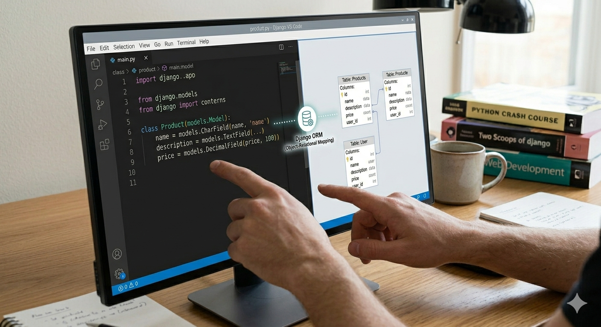
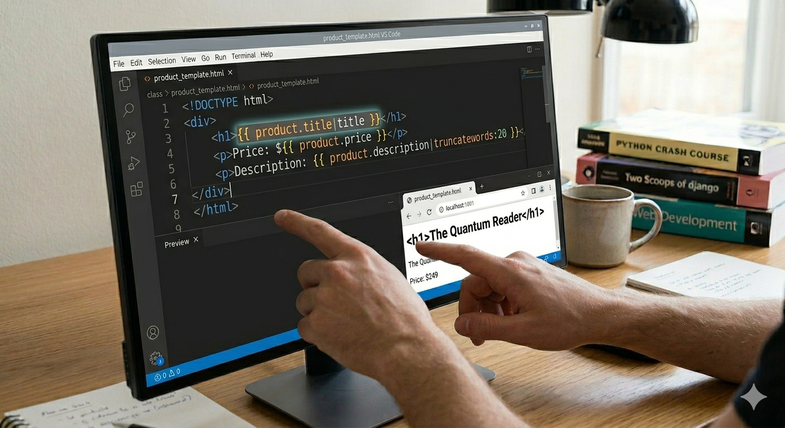
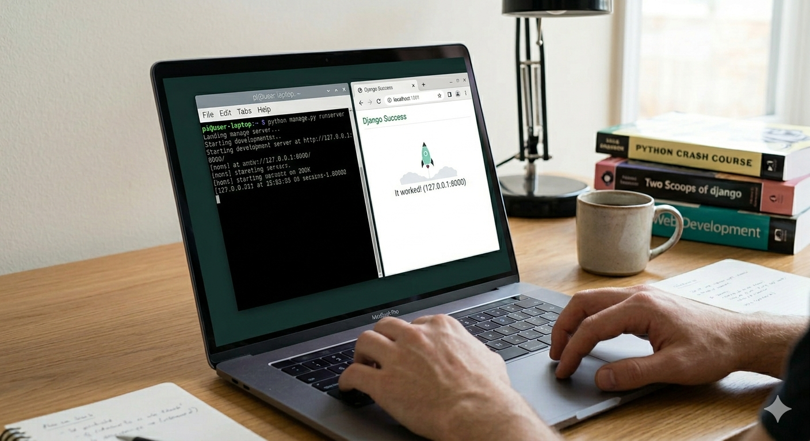

¿Qué es Django?
Django es un framework de desarrollo web de alto nivel creado en Python. Permite desarrollar aplicaciones web de manera rápida, segura y organizada, siguiendo el patrón MVT (Modelo-Vista-Template).
Instalación de Django
Para instalar Django se utiliza el gestor de paquetes de Python (pip):
pip install django
Después de instalarlo, puedes verificar que la instalación fue exitosa revisando la versión:
pip install django
Modelos en Django

Los modelos permiten definir la estructura de la base de datos utilizando clases de Python. Django se encarga de traducir este código a tablas SQL de forma automática.
Vistas en Django
Las vistas contienen la lógica de negocio de la aplicación. Se encargan de procesar las solicitudes (requests) del usuario y retornar una respuesta (response).
Templates en Django

Los templates permiten mostrar contenido HTML dinámico utilizando el motor de plantillas de Django, facilitando la inserción de variables y lógica básica directamente en el HTML.
Servidor de Desarrollo

Para ejecutar el servidor local de desarrollo, sitúate en la carpeta del proyecto y ejecuta:
python manage.py runserver
Luego, puedes acceder desde tu navegador favorito utilizando la siguiente dirección URL:
http://127.0.0.1:8000